Tutorial 15, Part B – Cylinders, Spheres, and Other 3-D
Effects
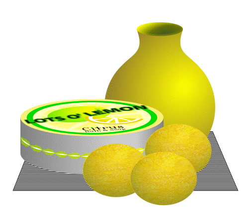
Inkscape’s radial gradient
tool helps you in highlighting the curvature of rounded objects, such as
globes and vases, in ways that create the sense of a single directed
light source. The Swirl tool helps in creating a texture on a curved
surface, further enhancing a 3-D effect.
In this tutorial, you’ll learn how to do the following:
Unevenly swirl a two-dimensional texture.
Clip a background texture to create an illusion of a textured spherical
surface.
Add a radial gradient to a background image to produce a curved
reflection of a distant light source.
This tutorial is the second of two parts in which you create 3-D objects
for a poster. You have already created a short cylindrical canister with a
lid, linear gradient on the side, and a decorative band that follows the
middle line of the cylindrical body.
In this part, you will draw lemon soap globes that will have surface
texturing and radial gradients that suggest a diffuse reflection of light
from a nearby source of illumination. You will also draw a vase that is
made up of separate objects, merge them into one object, and then add
gradients to the result to produce lighting, shadowing, and three-dimensional
solidity.
Getting Started
Start Inkscape.
Download art file Tutorial15B_end.svg
and store it in a convenient location.
File > Open file Tutorial15B_end.svg. This file displays a
completed illustration of a soap can, soap globes, and a vase.
If you like, choose View > Zoom > Zoom Out to reduce the view of
the finished artwork, adjust the window size, and leave it on your screen
as you work. (Use the Select tool () to select and move the artwork
where you want it in the window.) If you don’t want to leave the
image open, choose File > Close.
If you worked through the previous tutorial, then File > Open
file Lemon.svg. You will continue working on this artwork.
If you haven’t done the previous tutorial, then download art file
Tutorial15B_start.svg
and store it in a convenient location. File > Open file
Tutorial15B_start.svg, and then File > Save As… it as
Lemon.svg.
Resource: For an illustration of the finished artwork in this
tutorial, see the top of this page.
Import the lemon skin image into your Lemon.svg work file by
choosing File > Open, selecting file StylizedLemonSkin.svg, and
opening it.
Select the image of the lemon skin and choose Edit > Copy to copy
it to the clipboard.
Switch to the Lemon.svg Inkscape window, place the cursor
to a side of the canister artwork and press <Ctrl>-V to paste the
lemon skin image at that location.
You will create a swirl effect with the lemon skin image. The
swirling motion will contribute to the three-dimensionality of the soap
globes, enhanced further by applying a radial gradient.
With the lemon skin image, choose Extensions > Raster >
Swirl…. When the Swirl dialog box appears, set the
Degrees value to 100. Check the Live preview checkbox
so you will see the result before you actually apply the value.
Click on the Apply button to apply the swirl value, then click on
the Close button to dismiss the dialog box.
If you would like more swirl, then press <Ctrl>-Z to undo the swirl
action, choose Extensions > Raster > Swirl… again, and enter
another value into the Degrees text box.
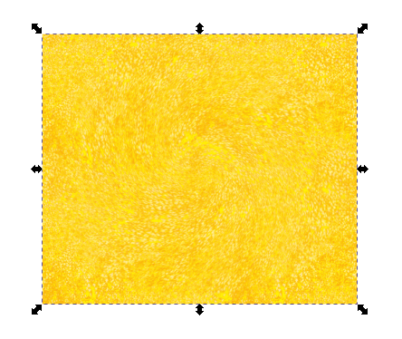
Swirling the lemon skin.
You will now “squash” the lemon skin image.
Choose Object > Transform…, and click on the Scale
tab. Set the Height to 50.000 %. Keep the Width at
100.000 %.
The swirl effect appears to be angled, which is what you want.
It’s as if you are looking at it from an angle, instead of from
straight up from the swirl center.
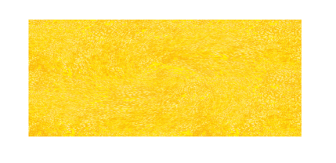
Rescaling the lemon skin image to 50 percent
height.
Now create a clipping mask for a soap globe.
Select the Ellipse tool () in the toolbox and draw an ellipse
over the swirl. Set the ellipse’s stroke to black, stroke thickness
to 1 pixel, and fill color to none. With a thin black stroke and no
color fill, you can easily position the ellipse clipping mask where you
need it with precision.
Place the ellipse on the swirl so that the center of the swirl occupies
the top right portion of the ellipse. The effect of a slightly off-center
swirl heightens the sense of the globe being a three-dimensional object.
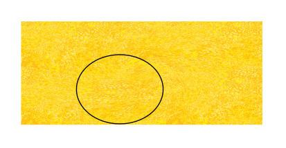
Drawing the ellipse clipping mask.
Select the ellipse by clicking on its border. (You can’t select
it by clicking inside — there is no color fill and thus nothing to
select.). <Shift>-click on the background swirl to group-select it.
Choose Object > Clip > Set. The swirl outside the ellipse is hidden;
the portion inside the ellipse remains. Note how the squashed swirl imparts
a 3-D feel to the artwork, even a sense of motion, which is nice and catches
the eye.
Clipping the lemon skin image.
With the globe given a good surface texture and properly clipped,
it is now time to apply a gradient to simulate lighting and shadowing to
simulate depth. The lighting and shadow effect will be in the form of an
overlay.
With the Ellipse tool (), draw another ellipse with a thin
black stroke and no fill, just like the last one you drew the coincides
exactly with the elliptical soap globe. This second ellipse will be the
overlay.
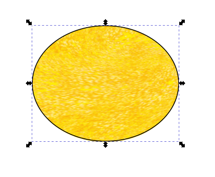
Drawing a duplicate ellipse with no fill and a thin black
stroke.
Start making the radial gradient by choosing Object > Fill and
Stroke…, and selecting the Radial Gradient tab in the Fill
and Stroke dialog box. A black-to-white default radial gradient now
fills the ellipse. (The gradient swatches below the default swatch are
from previous experiments of my own.)
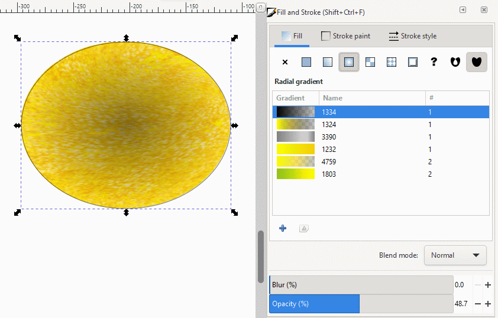
Applying a default radial gradient.
Select the Create and edit gradients tool () in the toolbox. The Edit gradient tool appears
across the ellipse body as two perpendicular lines with stop nodes at the
common center and at the ends.
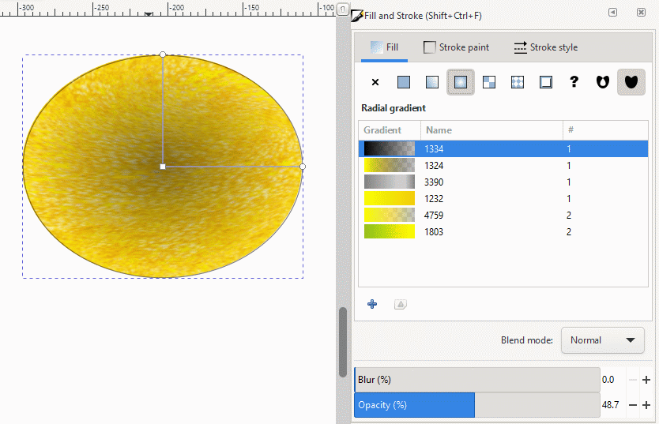
Radial gradient tool activated.
Click on the central stop node with the Edit gradient
cursor () to select it. The node turns blue.
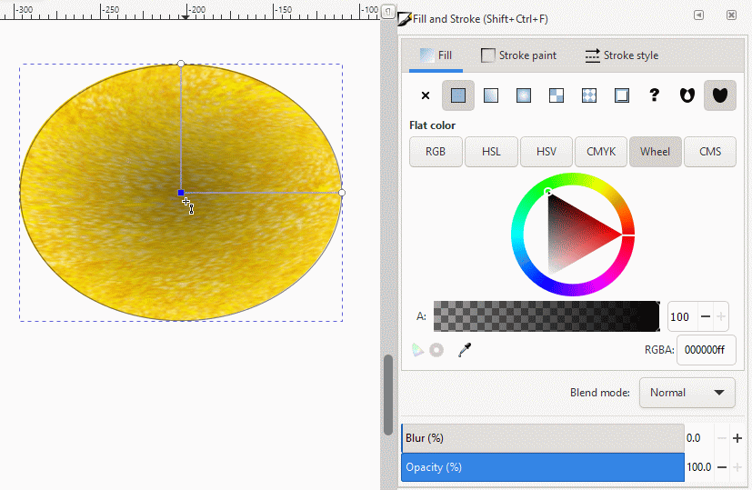
Selecting the central radial gradient node.
With the central radial gradient node selected, click on the yellow
color swatch in the Color palette. The area around the central node turns
yellow.
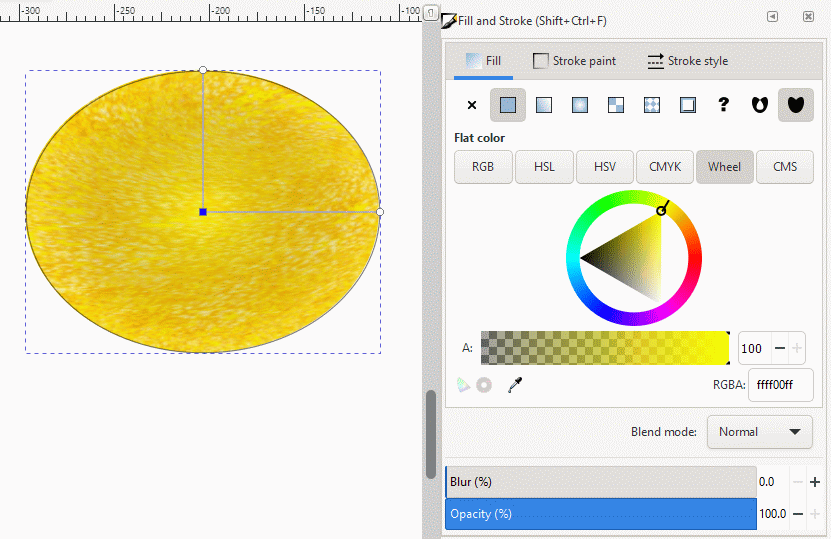
Select yellow for the color at the central gradient
node.
With the central radial gradient node still selected, click-drag the
node to the upper right portion of the ellipse so it is more-or-less
coincident with the center of the background swirl. Note how the two
perpendicular lines and their end nodes maintain their position relative to
the center node as you move them.
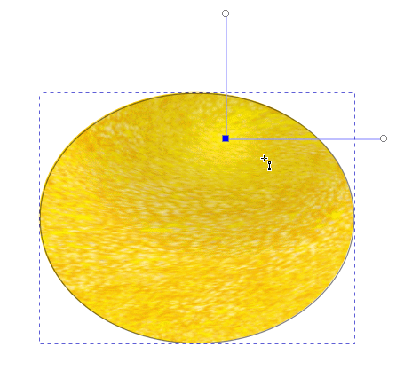
Moving the radial gradient tool to the upper right portion
of the ellipse.
The two end nodes on the each gradient direction line control the
outer color that the central color grades to. They will control the shadow
in the lower section of the ellipse.
Click-drag one of the end nodes around until they are both situated
in the lower part of the ellipse. Their placement doesn’t have to be
exact. One, the other, or both nodes can even be extended out beyond the
edge of the ellipse. You will see the dark part of the radial gradient
change as you adjust the direction and length of the gradient lines.
Adjust as you see fit.
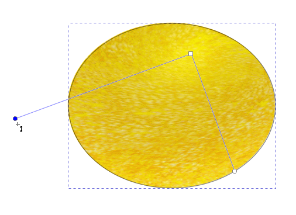
Rotating and adjusting the radial gradient direction lines
and nodes.
The shadow effect isn’t strong. Adding a gradient stop in
the middle of the gradient lines can help you in controlling the darkness
and placement of the shadow with finer control.
Double-click in the middle of one of the gradient lines with the Edit
gradient cursor (). An extra gradient stop appears on
both lines as a blue diamond, meaning that they are active and waiting to
receive a new color and/or to be moved.
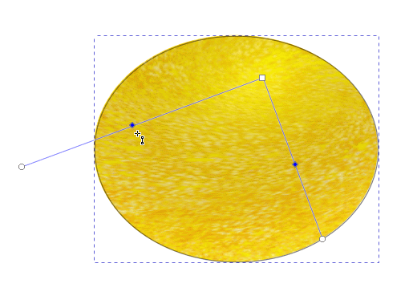
Adding an extra gradient stop to the radial gradient
direction lines.
Resize the gradient direction lines, rotate them, and click on one
or the other end node to change its color to a lighter or darker shadow
color. Also adjust the transparency of the shadow. Try a 50 percent opacity,
less, or more, until you are satisfied with what you see.
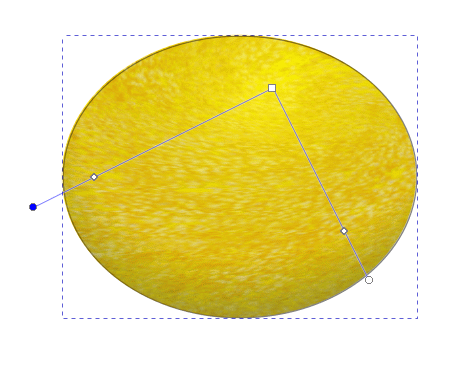
Fine adjusting the shadow effect.
Reduce the opacity of the central gradient tool node to about
50 percent so the underlying swirl becomes more visible.
Reducing the opacity of the central radial gradient node to
50 percent.
When you have finished making fine adjustments to the radial
gradient, select the Select tool () to finalize the
gradient overlay.
Finalizing the radial gradient overlay.
If you separate the soap globe and the lighting-shadow overlay,
you can see how the upper right region of the overlay can give the
impression that a light is shining upon it from an angle, while underneath,
the shadow suggests that the object is solid and opaque, not permitting
light to reach the bottom. For round objects, this technique is effective
at producing the illusion of a three-dimensional round object.
A simple real-world example is to take an egg, put it on a table, and
see how light interacts with it. Look at it from different angles, place
the egg at different distances from any source of illumination, and see how
the interplay of light and shadow change in complementary ways to maintain
the sense of three-dimensionality. It is your job to learn how to replicate
what you observe and use it in your own sense of design.
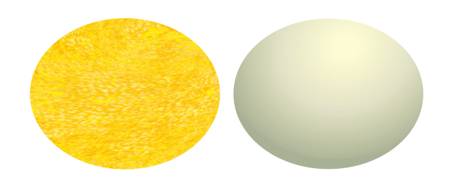
Original lemon soap globe and gradient overlay.
Make two duplicates of the lemon globe using <Ctrl>-D and
place all three globes so they are situated in the front right of the
soap canister. You will make a surface for them to sit on later in this
tutorial.
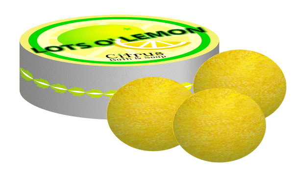
Duplicating and positioning lemon soap globes.
File > Save.
Using the Path Union Function and Radial Gradients to Create a Vase
Vases are objects of revolution. The concept comes from geometry where you
take a line or curve and rotate it around an axis of rotation. Cylinders,
spheres, bowls, cones, and vases are example of lines or curves and rotated
around an axis. You have already learned how to make a cylinder and globes,
and give them a three-dimensional appearance.
The vase in this tutorial is a composite shape, made of a circle that is
flattened at one end, a neck made of two joined curves, and an open top
created from an ellipse.
Although the vase is simple in geometry, you will give it the close
attention that a skilled ceramicist would give in creating in piece of fine
porcelain by hand.
Select the Ellipse tool () in
the toolbox.
Draw a circle using <Ctrl>-drag. Give it a thin black stroke
and no (none) color fill.
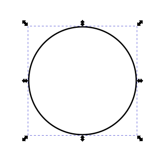
Drawing a circle with a thin black stoke and no color
fill.
You will flatten the bottom of the circle to impart the look that it
is the bottom of the vase that sits on a flat surface.
Start by choosing Path > Object to Path. You will have great freedom
to deforming one small part of the circle while leaving the rest of the
circumference unaffected. Four nodes appear on the four quadrants of the
circle.
Converting the circle into a path.
With the Node tool () still active, click on the lower left-hand curve
of the circle. The left and bottom nodes become highlighted, signaling that
the curve segment between them can be manipulated.
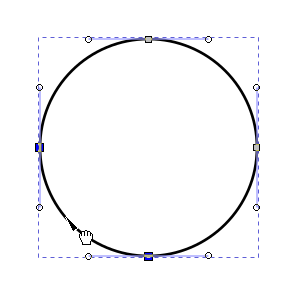
Selecting the lower left-hand curve segment of the
circle.
Click on the Insert new nodes into selected segments icon
() in the Node Tool Control Bar
to add a new node exactly between the two highlighted nodes.
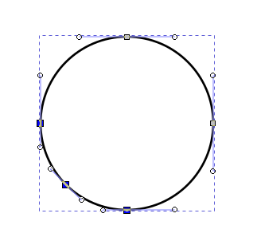
Insert a new node into the lower left curve of the
circle’s circumference.
Repeat Steps 4 and 5 for the lower left-hand curve segment of the
circle.
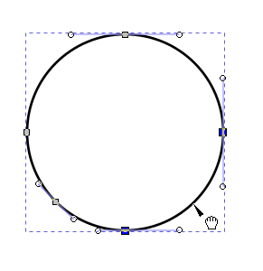
Selecting the lower right curve of the circle’s
circumference.
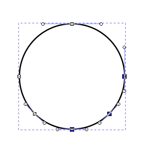
Insert a new node into the lower right curve of the
circle’s circumference.
Select the bottom node with the Node tool ().
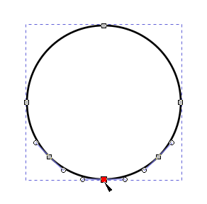
Selecting the bottom node with the Node tool.
Click-drag the bottom node upwards a little distance to create a
minor indentation in the curvature of the circle at that point. This
indentation creates the subtle impression that it is the bottom of the
circle (much like a glass paper weight) that is to rest on a flat
surface.
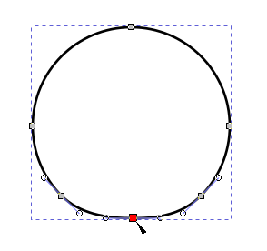
Raising the bottom node of the circle.
You will now draw the circle that will become the open top of the
vase.
Select the Ellipse tool () and <Ctrl>-drag to create a
circle whose diameter is between ⅓ and ½ the diameter of the
vase body.
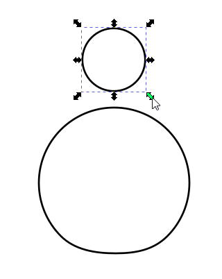
Drawing the circle that will become the open top of the
vase.
The soap canister that you created in Tutorial 15A has its lid
rescaled using the Transform tool so that its height is now 30
percent of its original height of 100 percent. The 30 percent value sets
the amount of deformation throughout the artwork is a way that also sets
the virtual angle at which a viewer looks at your artwork.
By maintaining a consistent value of 30 percent in any graphic design
function that manipulates height reduction, you are able to maintain the
consistent illusion of a real-world point of view from an angle, upwards or
downwards, of your artwork, not from straight down or straight from a side.
You train the viewer’s eye and mind that they are looking at something
simulating a real-world three-dimensional universe.
Transform the newly-drawn, and selected, circle by choosing Object >
Transform… Scale, and set its Height to 30 percent.
Make sure that % is selected as the unit of measurement.
Click on the Apply button and then on the Close button to
dismiss the Transform dialog box.
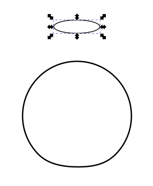
Reducing the new circle’s diameter to 30 percent its
original value.
With the newly created ellipse still selected, <Shift>-click
the stroke of the vase body to group-select it, choose Object > Align
and Distribute…, select First selected in the Relative
to drop-down list of selections, and then click on the Center on
vertical axis icon (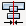).
The ellipse and vase body are now centered one over the other. You are
building precision into your design.
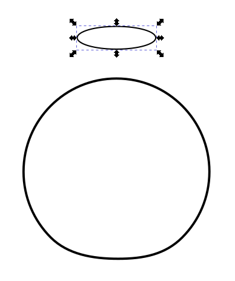
Vertically centering the ellipse and the vase
body.
You will now draw the vase’s neck.
“Grab” a vertical guideline from the left-hand ruler and
drag it so that it just touches the left edge of the ellipse. The small
circle is that line’s anchor about which you can rotate the
guideline. Click-drag the anchor so it is situated where the guideline
touches the ellipse. It will be the point about which you will rotate the
guideline so it just touches both the ellipse and the body of the vase.
This guideline will be used to constrain the curve that will become the
left side of the neck. You will not need to drag a second line to the right
side of the ellipse, as you will see shortly.
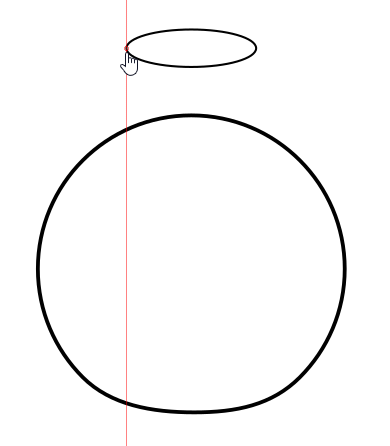
Dragging a guideline to the left side of the ellipse and
moving the anchor to the point of contact.
Put the Select cursor () on the guideline and press
<Shift>. The cursor turns into a hand cursor and a double-circular
arrow appears on the guideline, indicating that you can now rotate the line
about its anchor. Rotate the line so that it just touches the body of the
vase.
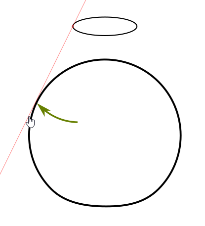
Rotating the guideline so that it just contacts the body of
the vase.
Bring up the Snap Controls Bar if it isn’t up already
(choose View > Show/Hide > Snap Controls Bar) and click on Enable
snapping (%) (), Snap nodes, paths, and handles (), and Snap guides ().
With the Pen tool (), draw a line segment from where the guideline contacts
the body of the vase up to where the segment touches the ellipse.
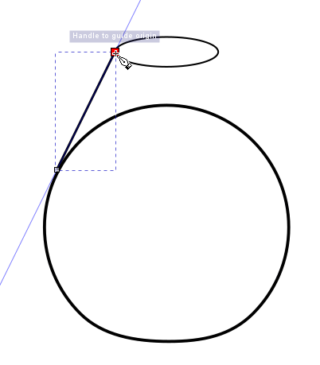
Drawing the line segment between the body of the vase and
the ellipse.
Click on the Node tool (), then click on the line segment to select it.
Then, click-drag the segment inwards to create a gentle asymmetrical curve
that looks appropriate for the left side of a vase neck. Make fine
adjustments with the direction handles and nodes until you like what you
see. You will make micro-adjustments shortly.
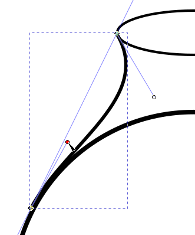
Converting the neck line segment into a curve.
Select the Select tool (), keep the curve selected, and
choose Edit > Duplicate to duplicate it.
Click on the Flip selected objects horizontally icon () to make the duplicate a mirror
image of the original.
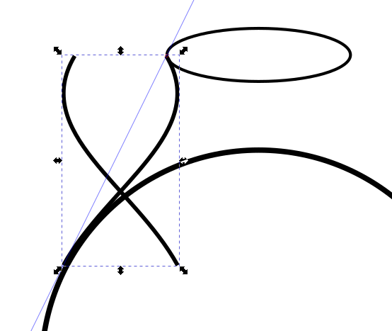
Turning the duplicated curve into an exact mirror
image.
<Ctrl>-drag the duplicate curve to the right side of the
vase-ellipse image and position it so that it connects the two shapes.
Remember that moving an object with the <Ctrl> key pressed constrains
movement to either the horizontal direction or the vertical direction.
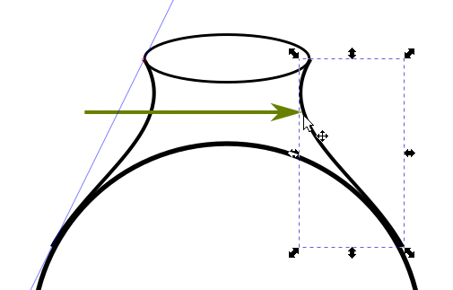
Moving the mirror-image duplicate curve to the right side
of the vase and ellipse.
Select the ellipse and, with the <Ctrl> key pressed, move it
directly upwards a little bit so it will be out of the way when you
fine-adjust both curves.
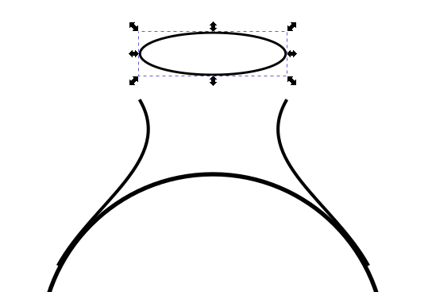
Moving the ellipse straight up a short
distance.
Select the Node tool () and <Shift>-click on both curves to
group-select them. Instead of appearing inside a single bounding box with
directional handles as you would see with the Select tool (),
each curve appears in its own bounding box and ends with its own nodes.
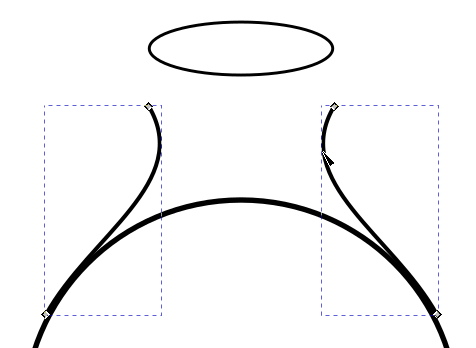
Group-selecting the two curves with the Node
tool.
You will now join the two top curve nodes with a line segment.
With the Node tool () active, draw a marquee around both nodes to
group-select them (and not the lower two nodes).
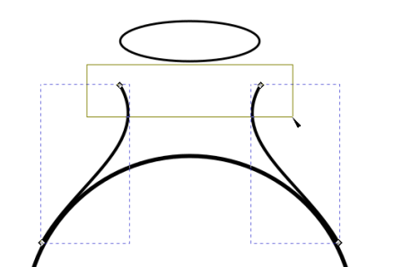
Marquee-selecting the two top nodes of both
curves.
Both top nodes are highlighted and ready for manipulation. The bottom
two nodes are unaffected.
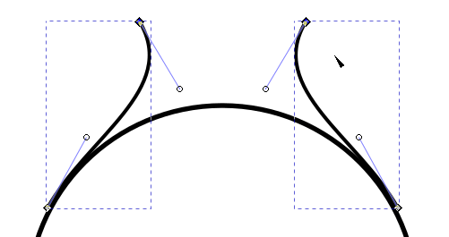
The two top nodes are highlighted, the bottom two nodes are
unaffected.
With the two top nodes highlighted, click on the Join selected
endnodes with a new segment icon (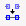) in the Node Tool Controls Bar. A
straight line segment now connects the two nodes.
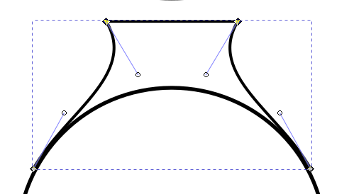
Connecting the two top curve nodes.
It’s likely that the two neck curves aren’t in contact
with the body of the vase. There might be a pixel or fraction of a pixel
space between the vase and the curves. Here is when you do
micro-adjustment.
Choose View > Display Mode > Outline. With only paths visible,
you can see discrepancies more easily. In the figure below, both curves are
not in contact with the vase body. You will move each curve inward until
they touch seamlessly, without any break.
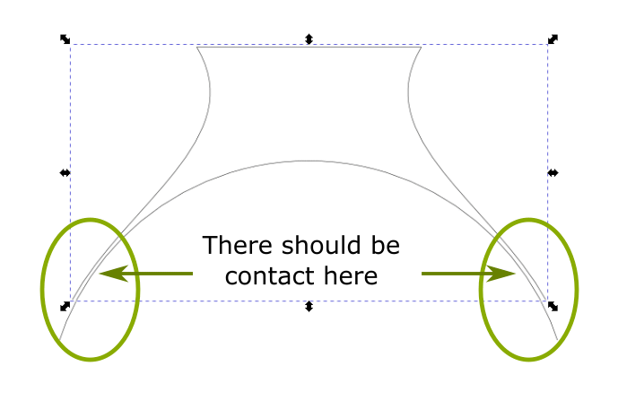
Top portion of the vase in Outline view.
An easy way to bring the left curve in so that it touches the body
of the vase properly is to click-drag the left-hand direction handle on the
bounding box inwards until the curve touches the vase body. Outline view
makes this technique very easy. Remember that you can also magnify your
area of focus with the Zoom tool to get the
“micro”-feeling in micro-adjustment.
Do the same thing with the right side curve.
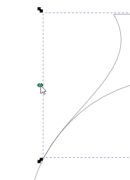
Bringing the left curve in for proper contact with the
vase body.
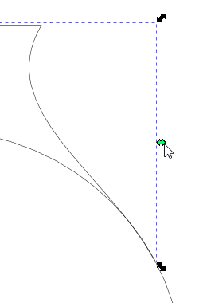
Bringing the right curve in for proper contact with the
vase body.
Now combine both the upper neck portion of the vase with the vase
body into one path in preparation for color work over the whole body.
Marquee-select both neck and body objects to group-select them.
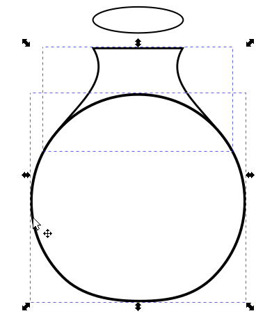
Group-selecting the vase neck and body.
Choose Path > Union. There is now only one bounding box enclosing
the entire vase construct as a single object.
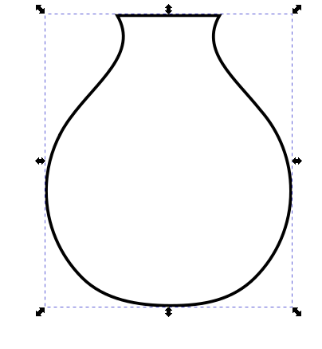
Combining vase neck and body with the Path union
function.
The next step is to color the vase. Click on the yellow color swatch
in the Color palette to give the vase a yellow fill. Then
<Shift>-click on the none swatch () to eliminate the
stroke.
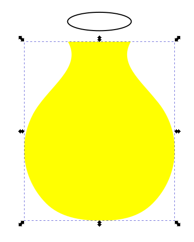
Giving the vase a yellow fill and no stroke.
Click on the Radial gradient icon ()
in the Fill dialog box. The vase now has a gradient that changes
from an opaque yellow at the center to 100 percent transparency at the
edges.
Click on the Gradient Tool () in the toolbox. The Gradient
Tool directional handles and nodes appear.
Applying a gradient to the vase.
Drag the square node to the upper right portion of the vase. The
yellow Will-o’-the-wisp follows it. The yellow area will represent
the area of greatest illumination from a nearby light source.
Click-drag one of the circular end nodes around about half a
turn.
With that one end node still active (blue-colored), click on the
HSL tab (Hue, Saturation, Lightness) in the
Fill dialog box, and move the slider in the L color bar to
the left until the lightness value equals 30. By reducing the
lightness value, you are giving the outside region of the gradient a dark
yellow color. This darker color will represent shadowing on the back and
bottom side of the vase.
Adjust the position of the square node and the two circular end nodes to
achieve the kind of shadowing that you would like to see.
Note that, because the neck and body of the vase are now one object,
courtesy of having performed the path union, the gradient affects the entire
vase, instead of affecting just the neck or just the body. You are producing
the effect of depth of one solid three-dimensional body.
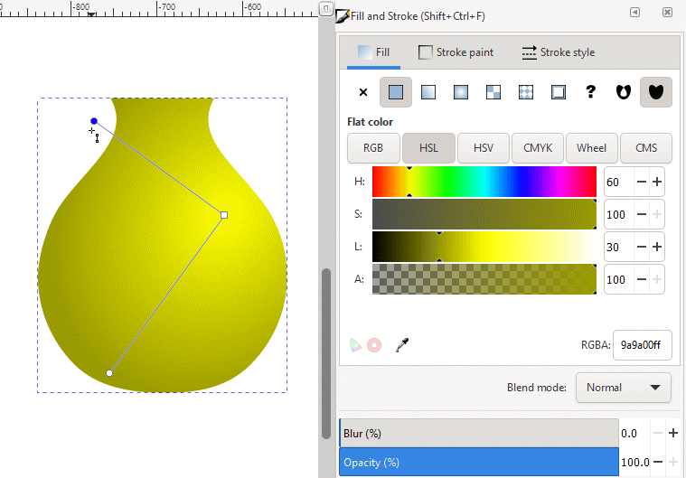
Creating shadowing on the vase.
When you are satisfied with what you see, click away from the vase
to deselect it.
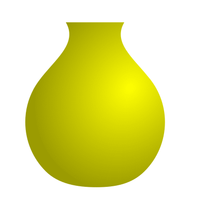
Deselecting the vase.
Now select the ellipse that will become the vase top and lower it
straight down (<Ctrl>-drag) so that the two neck curves touch it at
both ends of its major axis (its long diameter, if you will). Keep the
black stroke on the ellipse so you can see where one object ends and the
other starts.
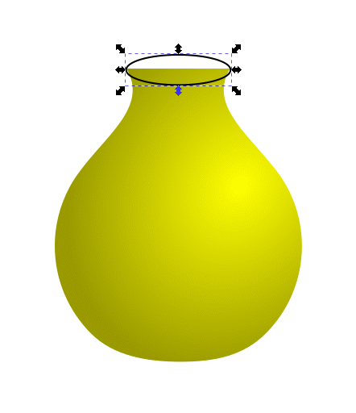
Lowering the ellipse.
Zoom in on the ellipse with the Zoom tool.
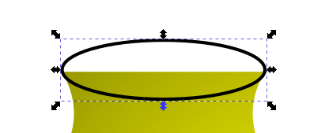
Zooming in on the ellipse.
When the top of a vase or cup is illuminated from the side and up
a little bit, the light falls on one of the inside walls as a crescent arc.
The rest of the inside wall down from the illuminated arc is dark, so you
know that you are looking deeper into the vase than the light can reach.
You will now imitate that light-and-shadow effect using a radial
gradient.
As you can see in the figure below, the curve that marks the boundary
between bright yellow and dark yellow looks like it is part of an ellipse.
You will use that insight to advantage by creating a radial gradient, part
of which will color the inside of the ellipse and look solid. The rest of
the gradient outside the ellipse will be hidden.
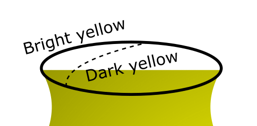
Anatomy of an arc of illumination.
Click on the edge of the ellipse to select it. In the Fill
dialog box (bring it back up if you dismissed it), click on the Radial
gradient icon () in the Fill dialog box. The ellipse is
now filled with a gradient starting with dark yellow at the center and
grading to bright yellow at the edges. This gradient setting is what you
used on the vase body. Inkscape keeps the settings from the last time you
used a tool in the same work session.
Creating the gradient inside the ellipse.
Drag the square node down to the lower left-hand portion of the
ellipse. The dark yellow coloration follows the node. This area will
represent the darker interior of the vase neck.
Click on a circular end node and rotate the radial gradient tool
around until one line segment points to the left and down a little bit, and
the other line points down and a little to the left.
The left-hand line will represent the dark yellow portion just down
from the yellow illuminated portion of the inside of the neck and help you
define its extent to the left as you refine the structure of the
inside shadow. The downward line represents that part of the inside shadow
that grows darker as you go further down into the vase interior.
Rotating the radial gradient tool to start defining the
shape of the interior shadow.
Double-click in the middle of one or the other gradient directional
handle to add a new gradient stop to both lines. You will use this new stop
to do fine adjustment of the structure of the shadow.
Adding a new gradient stop to the radial gradient
structure.
Drag the new stop on the lower directional handle line down to
extend the extent of the shadow in that direction. It doesn’t have
to be moved much because the gradient tool is very sensitive to movement.
The important point is that the shadow area needs to become darker is it
gets closer to the rim of the lip you are creating, creating the illusion
of consistently deepening darkness into the interior of the vase.
Extending the dark yellow area down toward the lower part
of the rim of the vase opening.
Select the Select tool (), click on or in the ellipse, and
<Shift>-click on the none swatch () to eliminate the
black lining on the rim.
Eliminating the black rim on the ellipse.
The edge rim now looks razor sharp. This is supposed to be a vase,
not a safety hazard! You will now give the lip thickness, including a
gradient. A thick rim also lends the look of solidness, which is what you
want in a ceramic 3-D object.
With the ellipse still selected (reselect if it has been deselected),
bring up the Fill and Stroke dialog box if it has been deselected or
iconified, choose the Stroke style tab, and set the stroke
Width to 8.000 pixels. The edge broadens into a thick rim
with a (radial) gradient already applied and its own Radial gradient
tool active for immediate use. The radial gradient was applied automatically
because the color fill had just been given a radial gradient.
Eight-pixel thick rim with gradient applied.
The rim coloration looks good. The rim thickness lends the impression
that the vase has material strength, further enhancing its 3-D feel. Choose
Edit > Deselect to deselect the open-top artwork for the vase.
Marquee-select the vase top and the vase body to group-select them. Press
<Ctrl>-G to group them into one grouped unit. Click anywhere off the
artwork to deselect it.
Finished vase.
With the Select tool (), move the vase to a position of your
choice over the canister-and-soap globe artwork.
Moving the vase over the canister-and-soap globe
artwork.
With the vase still selected, click on the Lower selection to
bottom icon () to put the vase behind the canister
and soap globes. Reposition and resize it as you see fit.
Lowering the vase to the bottom of the artwork image
stack.
Click anywhere off the artwork to deselect it.
Partially finished artwork.
Making a Placemat Using a Pattern Fill
The last item to draw is a placemat. You will draw a trapezoid to represent
a square mat that recedes into the distance and fill it with lines that also
recede within the sides.
With the Pen tool (), draw a trapezoid. Note: drawing the horizontal
sides is easy when you draw pressing the <Ctrl> key — the
<Ctrl> key maintains the intended horizontal direction even if the
cursor wanders off the line.
Drawing the trapezoid.
With the Node tool (), adjust the placement of any nodes so that your
placemat enjoys a symmetrical geometry.
Fine-adjusting corner nodes of the placemat.
Select the Select tool () in preparation for filling the
trapezoid with a pattern. The nodes disappear and the bounding box now has
direction handles.
Selecting the Selection tool.
With the trapezoid still selected, choose Object > Fill and
Stroke…, Fill tab, the Pattern button ().
If the Pattern fill does not default to Stripes 1:1, then
select Stripes 1:1 from the dropdown list of patterns. The trapezoid
is now filled with alternating black and transparent vertical bars.
Alternating vertical black and transparent bar fill
pattern.
With the trapezoid still selected, click on the Node tool (). Nodes
appear on the corners of the trapezoid and the Pattern tool appears
at the upper left corner of the artboard (in the orange ellipse).
Node tool activated, nodes appearing at corners of the
trapezoid, and the Pattern tool appears at the upper left corner
of the artboard.
Click-drag the × symbol in the Pattern tool to
move all three Pattern tool components to below the placemat
object.
Click on the circle tool component ○ and, while pressing
the <Ctrl> key, rotate the circle (now red because it is active)
around the × symbol until it is directly below the
×. Note that pressing the <Ctrl> key causes the circle
symbol ○ to rotate in 15 degree increments. As you rotate the circle
symbol ○, the vertical bars change their orientation until they are
horizontal.
Rotating the circle symbol so the pattern bars are
horizontally oriented.
Reduce the thickness of the now horizontal bars by dragging the
square symbol □ upwards until you achieve a bar thickness
that you like. The square turns red as you drag it, indicating that it is
active. The circle symbol ○ moves with the square, yet keeping
its orientation to the × symbol. The closer the circle is to
the × symbol, the thinner the bars become.
Pattern tool in standard position.Pattern tool with circle rotated down.Pattern tool with square moved upwards.
The circle moves with the square.
Also, note that the square symbol □ is sensitive to
placement. Magnifying your work area might help in giving you finer control
over its “electronic hyper-activity.”
Reducing the thickness of the horizontal bars.
Select the Select tool () in preparation for lowering the
placemat to the bottom of the image stack.
Activating the Selection tool.
With the placemat still selected, click on the Lower selection to
bottom icon () to put the placemat bottommost in
the image stack.
Lowering the placemat to the bottom of the image
stack.
Press <Esc> to deselect the artwork.
Finished artwork.
File > Save. File > Quit to exit Inkscape.
You have now completed the Inkscape tutorial that focuses on creating the
appearance of three-dimensionality in your artwork. Gradients can be an
essential feature in simulating depth, distance, and the sense that some objects
sit before, after, or next to others.
Experiment with different lighting and shadowing colors, different degrees
of contrast, and consider adding other sources of illumination placed in
different directions. Base your experiments on what you see in reality, and
then let your imagination take over. Let Inkscape be your playground of the
imagination!
Review Questions
How can you determine whether a linear gradient or radial gradient is
better for creating creating lighting and shadowing on an object?
How can you make a rim of a bowl, cup, or vase look solid and
three-dimensional?
When an object is made up of several parts that touch, what can you
do to create smooth lighting and shadowing across the entire object? What
can you do if parts do not touch?
Review Answers
A basic rule-of-thumb is to take a real-world object similar to what
you want to paint and place it under the type of illumination you intend to
duplicate. Critically observe how light is distributed across the surface
or surfaces, and where and how shadowing appears. Then, make your
determination.
To give the appearance of solidity to a rim of anything having a
top or opening, select the object that defines the rim and increase the
width of the stroke using the Width feature in the Stroke
style dialog box. Adding a linear or radial gradient to the stroke via
the Stroke paint dialog box allows you to be creative with the
lighting of the rim to enhance the 3-D effect.
If the object you want to paint consists of parts that can be joined
smoothly, like a vase, cup, or bowl, join them by first group-selecting
them and then by choosing Path > Union to unite them into one path.
Inkscape’s gradient functions will see that path as one entity that
they can fill as you see fit.
If parts do not touch, then treat each separate part individually by
giving them their own gradients. If they are illuminated by the same light
source, make sure that the direction of illumination and shadowing are
similar on all the objects to maintain consistency in the play of light.

 ) to select and move the artwork
where you want it in the window.) If you don’t want to leave the
image open, choose File > Close.
) to select and move the artwork
where you want it in the window.) If you don’t want to leave the
image open, choose File > Close.{kind=link}
{kind=link}

 ) in the toolbox. The Edit gradient tool appears
across the ellipse body as two perpendicular lines with stop nodes at the
common center and at the ends.
) in the toolbox. The Edit gradient tool appears
across the ellipse body as two perpendicular lines with stop nodes at the
common center and at the ends. ) to select it. The node turns blue.
) to select it. The node turns blue.

{kind=link}

 ) still active, click on the lower left-hand curve
of the circle. The left and bottom nodes become highlighted, signaling that
the curve segment between them can be manipulated.
) still active, click on the lower left-hand curve
of the circle. The left and bottom nodes become highlighted, signaling that
the curve segment between them can be manipulated.
 ) in the Node Tool Control Bar
to add a new node exactly between the two highlighted nodes.
) in the Node Tool Control Bar
to add a new node exactly between the two highlighted nodes. ) on the guideline and press
<Shift>. The cursor turns into a hand cursor and a double-circular
arrow appears on the guideline, indicating that you can now rotate the line
about its anchor. Rotate the line so that it just touches the body of the
vase.
) on the guideline and press
<Shift>. The cursor turns into a hand cursor and a double-circular
arrow appears on the guideline, indicating that you can now rotate the line
about its anchor. Rotate the line so that it just touches the body of the
vase. ), Snap nodes, paths, and handles (
), Snap nodes, paths, and handles ( ), and Snap guides (
), and Snap guides ( ).
). ), keep the curve selected, and
choose Edit > Duplicate to duplicate it.
), keep the curve selected, and
choose Edit > Duplicate to duplicate it. ) to make the duplicate a mirror
image of the original.
) to make the duplicate a mirror
image of the original. ) to eliminate the
stroke.
) to eliminate the
stroke.


 ) to put the vase behind the canister
and soap globes. Reposition and resize it as you see fit.
) to put the vase behind the canister
and soap globes. Reposition and resize it as you see fit.

 ).
).